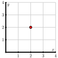

Section 10.3 Second-Order Partial Derivatives
Motivating Questions
Given a function \(f\) of two independent variables \(x\) and \(y\text{,}\) how are the second-order partial derivatives of \(f\) defined?
What do the second-order partial derivatives \(f_{xx}\text{,}\) \(f_{yy}\text{,}\) \(f_{xy}\text{,}\) and \(f_{yx}\) of a function \(f\) tell us about the function's behavior?
Recall that for a single-variable function \(f\text{,}\) the second derivative of \(f\) is defined to be the derivative of the first derivative. That is, \(f''(x) = \frac{d}{dx}[f'(x)]\text{,}\) which can be stated in terms of the limit definition of the derivative by writing
In what follows, we begin exploring the four different second-order partial derivatives of a function of two variables and seek to understand what these various derivatives tell us about the function's behavior.
Preview Activity 10.3.1.
Once again, let's consider the function \(f\) defined by \(f(x,y) = \frac{x^2\sin(2y)}{32}\) that measures a projectile's range as a function of its initial speed \(x\) and launch angle \(y\text{.}\) The graph of this function, including traces with \(x=150\) and \(y=0.6\text{,}\) is shown in Figure 10.3.1.


Compute the partial derivative \(f_x\text{.}\) Notice that \(f_x\) itself is a new function of \(x\) and \(y\text{,}\) so we may now compute the partial derivatives of \(f_x\text{.}\) Find the partial derivative \(f_{xx} = (f_x)_x\) and show that \(f_{xx}(150,0.6) \approx 0.058\text{.}\)
Figure 10.3.2 shows the trace of \(f\) with \(y=0.6\) with three tangent lines included. Explain how your result from part (a) of this preview activity is reflected in this figure.
Figure 10.3.2. The trace with \(y=0.6\text{.}\) Determine the partial derivative \(f_y\text{,}\) and then find the partial derivative \(f_{yy}=(f_y)_y\text{.}\) Evaluate \(f_{yy}(150, 0.6)\text{.}\)

Figure 10.3.3. More traces of the range function. Figure 10.3.3 shows the trace \(f(150, y)\) and includes three tangent lines. Explain how the value of \(f_{yy}(150,0.6)\) is reflected in this figure.
Because \(f_x\) and \(f_y\) are each functions of both \(x\) and \(y\text{,}\) they each have two partial derivatives. Not only can we compute \(f_{xx} = (f_x)_x\text{,}\) but also \(f_{xy} = (f_x)_y\text{;}\) likewise, in addition to \(f_{yy} = (f_y)_y\text{,}\) but also \(f_{yx} = (f_y)_x\text{.}\) For the range function \(f(x,y) = \frac{x^2\sin(2y)}{32}\text{,}\) use your earlier computations of \(f_x\) and \(f_y\) to now determine \(f_{xy}\) and \(f_{yx}\text{.}\) Write one sentence to explain how you calculated these “mixed” partial derivatives.
Subsection 10.3.1 Second-Order Partial Derivatives
A function \(f\) of two independent variables \(x\) and \(y\) has two first order partial derivatives, \(f_x\) and \(f_y\text{.}\) As we saw in Preview Activity 10.3.1, each of these first-order partial derivatives has two partial derivatives, giving a total of four second-order partial derivatives:
\(f_{xx} = (f_x)_x = \frac{\partial}{\partial x} \left(\frac{\partial f}{\partial x}\right) = \frac{\partial^2 f}{\partial x^2}\text{,}\)
\(f_{yy} = (f_y)_y=\frac{\partial}{\partial y} \left(\frac{\partial f}{\partial y}\right) = \frac{\partial^2 f}{\partial y^2}\text{,}\)
\(f_{xy} = (f_x)_y=\frac{\partial}{\partial y} \left(\frac{\partial f}{\partial x}\right) = \frac{\partial^2 f}{\partial y \partial x}\text{,}\)
\(f_{yx}=(f_y)_x=\frac{\partial}{\partial x} \left(\frac{\partial f}{\partial y}\right) = \frac{\partial^2 f}{\partial x \partial y}\text{.}\)
The first two are called unmixed second-order partial derivatives while the last two are called the mixed second-order partial derivatives.
One aspect of this notation can be a little confusing. The notation
means that we first differentiate with respect to \(x\) and then with respect to \(y\text{;}\) this can be expressed in the alternate notation \(f_{xy} = (f_x)_y\text{.}\) However, to find the second partial derivative
we first differentiate with respect to \(y\) and then \(x\text{.}\) This means that
Be sure to note carefully the difference between Leibniz notation and subscript notation and the order in which \(x\) and \(y\) appear in each. In addition, remember that anytime we compute a partial derivative, we hold constant the variable(s) other than the one we are differentiating with respect to.
Activity 10.3.2.
Find all second order partial derivatives of the following functions. For each partial derivative you calculate, state explicitly which variable is being held constant.
\(\displaystyle f(x,y) = x^2y^3\)
\(\displaystyle f(x,y) = y\cos(x)\)
\(\displaystyle g(s,t) = st^3 + s^4\)
How many second order partial derivatives does the function \(h\) defined by \(h(x,y,z) = 9x^9z-xyz^9 + 9\) have? Find \(h_{xz}\) and \(h_{zx}\) (you do not need to find the other second order partial derivatives).
In Preview Activity 10.3.1 and Activity 10.3.2, you may have noticed that the mixed second-order partial derivatives are equal. This observation holds generally and is known as Clairaut's Theorem.
Clairaut's Theorem.
Let \(f\) be a function of several variables for which the partial derivatives \(f_{xy}\) and \(f_{yx}\) are continuous near the point \((a,b)\text{.}\) Then
Subsection 10.3.2 Interpreting the Second-Order Partial Derivatives
Recall from single variable calculus that the second derivative measures the instantaneous rate of change of the derivative. This observation is the key to understanding the meaning of the second-order partial derivatives.


Furthermore, we remember that the second derivative of a function at a point provides us with information about the concavity of the function at that point. Since the unmixed second-order partial derivative \(f_{xx}\) requires us to hold \(y\) constant and differentiate twice with respect to \(x\text{,}\) we may simply view \(f_{xx}\) as the second derivative of a trace of \(f\) where \(y\) is fixed. As such, \(f_{xx}\) will measure the concavity of this trace.
Consider, for example, \(f(x,y) = \sin(x) e^{-y}\text{.}\) Figure 10.3.4 shows the graph of this function along with the trace given by \(y=-1.5\text{.}\) Also shown are three tangent lines to this trace, with increasing \(x\)-values from left to right among the three plots in Figure 10.3.4.
That the slope of the tangent line is decreasing as \(x\) increases is reflected, as it is in one-variable calculus, in the fact that the trace is concave down. Indeed, we see that \(f_x(x,y)=\cos(x)e^{-y}\) and so \(f_{xx}(x,y)=-\sin(x)e^{-y} \lt 0\text{,}\) since \(e^{-y} > 0\) for all values of \(y\text{,}\) including \(y = -1.5\text{.}\)
In the following activity, we further explore what second-order partial derivatives tell us about the geometric behavior of a surface.
Activity 10.3.3.
We continue to consider the function \(f\) defined by \(f(x,y) = \sin(x) e^{-y}\text{.}\)
In Figure 10.3.5, we see the trace of \(f(x,y) = \sin(x) e^{-y}\) that has \(x\) held constant with \(x = 1.75\text{.}\) We also see three different lines that are tangent to the trace of \(f\) in the \(y\) direction at values of \(y\) that are increasing from left to right in the figure. Write a couple of sentences that describe whether the slope of the tangent lines to this curve increase or decrease as \(y\) increases, and, after computing \(f_{yy}(x,y)\text{,}\) explain how this observation is related to the value of \(f_{yy}(1.75,y)\text{.}\) Be sure to address the notion of concavity in your response.(You need to be careful about the directions in which \(x\) and \(y\) are increasing.)

Figure 10.3.5. The tangent lines to a trace with increasing \(y\text{.}\) In Figure 10.3.6, we start to think about the mixed partial derivative, \(f_{xy}\text{.}\) Here, we first hold \(y\) constant to generate the first-order partial derivative \(f_x\text{,}\) and then we hold \(x\) constant to compute \(f_{xy}\text{.}\) This leads to first thinking about a trace with \(x\) being constant, followed by slopes of tangent lines in the \(x\)-direction that slide along the original trace. You might think of sliding your pencil down the trace with \(x\) constant in a way that its slope indicates \((f_x)_y\) in order to further animate the three snapshots shown in the figure.
Based on Figure 10.3.6, is \(f_{xy}(1.75, -1.5)\) positive or negative? Why?

Figure 10.3.6. The trace of \(z = f(x,y) = \sin(x)e^{-y}\) with \(x = 1.75\text{,}\) along with tangent lines in the \(y\)-direction at three different points. Determine the formula for \(f_{xy}(x,y)\text{,}\) and hence evaluate \(f_{xy}(1.75, -1.5)\text{.}\) How does this value compare with your observations in (b)?
We know that \(f_{xx}(1.75, -1.5)\) measures the concavity of the \(y = -1.5\) trace, and that \(f_{yy}(1.75, -1.5)\) measures the concavity of the \(x = 1.75\) trace. What do you think the quantity \(f_{xy}(1.75, -1.5)\) measures?
On Figure 10.3.6, sketch the trace with \(y = -1.5\text{,}\) and sketch three tangent lines whose slopes correspond to the value of \(f_{yx}(x,-1.5)\) for three different values of \(x\text{,}\) the middle of which is \(x = -1.5\text{.}\) Is \(f_{yx}(1.75, -1.5)\) positive or negative? Why? What does \(f_{yx}(1.75, -1.5)\) measure?
Just as with the first-order partial derivatives, we can approximate second-order partial derivatives in the situation where we have only partial information about the function.
Activity 10.3.4.
As we saw in Activity 10.2.5, the wind chill \(w(v,T)\text{,}\) in degrees Fahrenheit, is a function of the wind speed, in miles per hour, and the air temperature, in degrees Fahrenheit. Some values of the wind chill are recorded in Table 10.3.7.
| \(v \backslash T\) | -30 | -25 | -20 | -15 | -10 | -5 | 0 | 5 | 10 | 15 | 20 |
| 5 | -46 | -40 | -34 | -28 | -22 | -16 | -11 | -5 | 1 | 7 | 13 |
| 10 | -53 | -47 | -41 | -35 | -28 | -22 | -16 | -10 | -4 | 3 | 9 |
| 15 | -58 | -51 | -45 | -39 | -32 | -26 | -19 | -13 | -7 | 0 | 6 |
| 20 | -61 | -55 | -48 | -42 | -35 | -29 | -22 | -15 | -9 | -2 | 4 |
| 25 | -64 | -58 | -51 | -44 | -37 | -31 | -24 | -17 | -11 | -4 | 3 |
| 30 | -67 | -60 | -53 | -46 | -39 | -33 | -26 | -19 | -12 | -5 | 1 |
| 35 | -69 | -62 | -55 | -48 | -41 | -34 | -27 | -21 | -14 | -7 | 0 |
| 40 | -71 | -64 | -57 | -50 | -43 | -36 | -29 | -22 | -15 | -8 | -1 |
Estimate the partial derivatives \(w_{T}(20,-15)\text{,}\) \(w_{T}(20,-10)\text{,}\) and \(w_T(20,-5)\text{.}\) Use these results to estimate the second-order partial \(w_{TT}(20, -10)\text{.}\)
In a similar way, estimate the second-order partial \(w_{vv}(20,-10)\text{.}\)
Estimate the partial derivatives \(w_T(20,-10)\text{,}\) \(w_T(25,-10)\text{,}\) and \(w_T(15,-10)\text{,}\) and use your results to estimate the partial \(w_{Tv}(20,-10)\text{.}\)
In a similar way, estimate the partial derivative \(w_{vT}(20,-10)\text{.}\)
Write several sentences that explain what the values \(w_{TT}(20, -10)\text{,}\) \(w_{vv}(20,-10)\text{,}\) and \(w_{Tv}(20,-10)\) indicate regarding the behavior of \(w(v,T)\text{.}\)
As we have found in Activities 10.3.3 and Activity 10.3.4, we may think of \(f_{xy}\) as measuring the “twist” of the graph as we increase \(y\) along a particular trace where \(x\) is held constant. In the same way, \(f_{yx}\) measures how the graph twists as we increase \(x\text{.}\) If we remember that Clairaut's theorem tells us that \(f_{xy} = f_{yx}\text{,}\) we see that the amount of twisting is the same in both directions. This twisting is perhaps more easily seen in Figure 10.3.8, which shows the graph of \(f(x,y) = -xy\text{,}\) for which \(f_{xy} = -1\text{.}\)
Subsection 10.3.3 Summary
-
There are four second-order partial derivatives of a function \(f\) of two independent variables \(x\) and \(y\text{:}\)
\begin{equation*} f_{xx} = (f_x)_x, f_{xy} = (f_x)_y, f_{yx} = (f_y)_x,\ \mbox{and} \ f_{yy} = (f_y)_y. \end{equation*} The unmixed second-order partial derivatives, \(f_{xx}\) and \(f_{yy}\text{,}\) tell us about the concavity of the traces. The mixed second-order partial derivatives, \(f_{xy}\) and \(f_{yx}\text{,}\) tell us how the graph of \(f\) twists.
Exercises 10.3.4 Exercises
1.
Calculate all four second-order partial derivatives of \(\displaystyle f(x,y) = 4x^{2}y+3xy^{3}\text{.}\)
\(f_{xx} \, (x,y) =\)
\(f_{xy} \, (x,y) =\)
\(f_{yx} \, (x,y) =\)
\(f_{yy} \, (x,y) =\)
2.
Find all the first and second order partial derivatives of \(f(x, y) = 7\sin(2x+y) + 6\cos(x-y)\text{.}\)
A. \(\frac{\partial f}{\partial x} = f_x =\)
B. \(\frac{\partial f}{\partial y} = f_y =\)
C. \(\frac{{\partial^2}f}{\partial x^2} = f_x{}_x =\)
D. \(\frac{{\partial^2}f}{\partial y^2} = f_y{}_y =\)
E. \(\frac{{\partial^2}f}{\partial x \partial y} = f_y{}_x =\)
F. \(\frac{{\partial^2}f}{\partial y \partial x} = f_x{}_y =\)
3.
Find the partial derivatives of the function
\(f_x(x,y) =\)
\(f_y(x,y) =\)
\(f_{xy}(x,y) =\)
\(f_{yx}(x,y) =\)
4.
Calculate all four second-order partial derivatives of \(\displaystyle f(x,y) = \sin\!\left(\frac{2x}{y}\right)\text{.}\)
\(f_{xx} \, (x,y) =\)
\(f_{xy} \, (x,y) =\)
\(f_{yx} \, (x,y) =\)
\(f_{yy} \, (x,y) =\)
5.
Given \(F(r,s,t)=r\!\left(5t^{3}-6s^{3}\right)\text{,}\) compute:
\(F_{rst}=\)
6.
Calculate all four second-order partial derivatives and check that \(f_{xy}=f_{yx}\text{.}\) Assume the variables are restricted to a domain on which the function is defined.
\(f_{xx} =\)
\(f_{yy} =\)
\(f_{xy} =\)
\(f_{yx} =\)
7.
Calculate all four second-order partial derivatives of \(\displaystyle f(x,y) = \left(3x+2y\right)e^{y}\text{.}\)
\(f_{xx} \, (x,y) =\)
\(f_{xy} \, (x,y) =\)
\(f_{yx} \, (x,y) =\)
\(f_{yy} \, (x,y) =\)
8.
Let \(f(x,y) = \left(2x-y\right)^{8}\text{.}\) Then
| \(\frac{\partial^2\!f}{\partial x\partial y}\) | \(=\) | |
| \(\frac{\partial^3\!f}{\partial x\partial y\partial x}\) | \(=\) | |
| \(\frac{\partial^3\!f}{\partial x^2\partial y}\) | \(=\) |
9.
If \(z_{xy} = 7 y\) and all of the second order partial derivatives of \(z\) are continuous, then
(a) \(z_{yx} =\)
(b) \(z_{xyx} =\)
(c) \(z_{xyy} =\)
10.
If \(z = f(x) + y g(x)\text{,}\) what can we say about \(z_{yy}\text{?}\)
\(\displaystyle z_{yy} = 0\)
\(\displaystyle z_{yy} = z_{xx}\)
\(\displaystyle z_{yy} = y\)
\(\displaystyle z_{yy} = g(x)\)
We cannot say anything
11.
Shown in Figure 10.3.9 is a contour plot of a function \(f\) with the values of \(f\) labeled on the contours. The point \((2,1)\) is highlighted in red.

Estimate the partial derivatives \(f_x(2,1)\) and \(f_y(2,1)\text{.}\)
Determine whether the second-order partial derivative \(f_{xx}(2,1)\) is positive or negative, and explain your thinking.
Determine whether the second-order partial derivative \(f_{yy}(2,1)\) is positive or negative, and explain your thinking.
Determine whether the second-order partial derivative \(f_{xy}(2,1)\) is positive or negative, and explain your thinking.
Determine whether the second-order partial derivative \(f_{yx}(2,1)\) is positive or negative, and explain your thinking.
Consider a function \(g\) of the variables \(x\) and \(y\) for which \(g_x(2,2) > 0\) and \(g_{xx}(2,2) \lt 0\text{.}\) Sketch possible behavior of some contours around \((2,2)\) on the left axes in Figure 10.3.10.
Figure 10.3.10. Plots for contours of \(g\) and \(h\text{.}\) Consider a function \(h\) of the variables \(x\) and \(y\) for which \(h_x(2,2) > 0\) and \(h_{xy}(2,2) \lt 0\text{.}\) Sketch possible behavior of some contour lines around \((2,2)\) on the right axes in Figure 10.3.10.
12.
The Heat Index, \(I\text{,}\) (measured in apparent degrees F) is a function of the actual temperature \(T\) outside (in degrees F) and the relative humidity \(H\) (measured as a percentage). A portion of the table which gives values for this function, \(I(T,H)\text{,}\) is reproduced in Table 10.3.11.
| T \(\downarrow \backslash\) H \(\rightarrow\) | 70 | 75 | 80 | 85 |
| 90 | 106 | 109 | 112 | 115 |
| 92 | 112 | 115 | 119 | 123 |
| 94 | 118 | 122 | 127 | 132 |
| 96 | 125 | 130 | 135 | 141 |
State the limit definition of the value \(I_{TT}(94,75)\text{.}\) Then, estimate \(I_{TT}(94,75)\text{,}\) and write one complete sentence that carefully explains the meaning of this value, including units.
State the limit definition of the value \(I_{HH}(94,75)\text{.}\) Then, estimate \(I_{HH}(94,75)\text{,}\) and write one complete sentence that carefully explains the meaning of this value, including units.
Finally, do likewise to estimate \(I_{HT}(94,75)\text{,}\) and write a sentence to explain the meaning of the value you found.
13.
The temperature on a heated metal plate positioned in the first quadrant of the \(xy\)-plane is given by
Assume that temperature is measured in degrees Celsius and that \(x\) and \(y\) are each measured in inches.
Determine \(C_{xx}(x,y)\) and \(C_{yy}(x,y)\text{.}\) Do not do any additional work to algebraically simplify your results.
Calculate \(C_{xx}(1.1, 1.2)\text{.}\) Suppose that an ant is walking past the point \((1.1, 1.2)\) along the line \(y = 1.2\text{.}\) Write a sentence to explain the meaning of the value of \(C_{xx}(1.1, 1.2)\text{,}\) including units.
Calculate \(C_{yy}(1.1, 1.2)\text{.}\) Suppose instead that an ant is walking past the point \((1.1, 1.2)\) along the line \(x = 1.1\text{.}\) Write a sentence to explain the meaning of the value of \(C_{yy}(1.1, 1.2)\text{,}\) including units.
Determine \(C_{xy}(x,y)\) and hence compute \(C_{xy}(1.1, 1.2)\text{.}\) What is the meaning of this value? Explain, in terms of an ant walking on the heated metal plate.
14.
Let \(f(x,y) = 8 - x^2 - y^2\) and \(g(x,y) = 8 - x^2 + 4xy - y^2\text{.}\)
Determine \(f_x\text{,}\) \(f_y\text{,}\) \(f_{xx}\text{,}\) \(f_{yy}\text{,}\) \(f_{xy}\text{,}\) and \(f_{yx}\text{.}\)
Evaluate each of the partial derivatives in (a) at the point \((0,0)\text{.}\)
What do the values in (b) suggest about the behavior of \(f\) near \((0,0)\text{?}\) Plot a graph of \(f\) and compare what you see visually to what the values suggest.
Determine \(g_x\text{,}\) \(g_y\text{,}\) \(g_{xx}\text{,}\) \(g_{yy}\text{,}\) \(g_{xy}\text{,}\) and \(g_{yx}\text{.}\)
Evaluate each of the partial derivatives in (d) at the point \((0,0)\text{.}\)
What do the values in (e) suggest about the behavior of \(g\) near \((0,0)\text{?}\) Plot a graph of \(g\) and compare what you see visually to what the values suggest.
What do the functions \(f\) and \(g\) have in common at \((0,0)\text{?}\) What is different? What do your observations tell you regarding the importance of a certain second-order partial derivative?
15.
Let \(f(x,y) = \frac{1}{2}xy^2\) represent the kinetic energy in Joules of an object of mass \(x\) in kilograms with velocity \(y\) in meters per second. Let \((a,b)\) be the point \((4,5)\) in the domain of \(f\text{.}\)
Calculate \(\frac{ \partial^2 f}{\partial x^2}\) at the point \((a,b)\text{.}\) Then explain as best you can what this second order partial derivative tells us about kinetic energy.
Calculate \(\frac{ \partial^2 f}{\partial y^2}\) at the point \((a,b)\text{.}\) Then explain as best you can what this second order partial derivative tells us about kinetic energy.
Calculate \(\frac{ \partial^2 f}{\partial y \partial x}\) at the point \((a,b)\text{.}\) Then explain as best you can what this second order partial derivative tells us about kinetic energy.
Calculate \(\frac{ \partial^2 f}{\partial x \partial y}\) at the point \((a,b)\text{.}\) Then explain as best you can what this second order partial derivative tells us about kinetic energy.